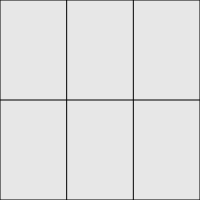
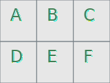
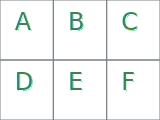

SVG画像の背景に画像を指定する
HTMLのimg要素にsvgファイルをセットする方法だと背景画像の表示に失敗する セキュリティのため、svgに埋め込められたリンクや画像パスは無効かされるためである。これを回避するにはsvgファイルを読み込むのでなく、svgファイルの中身のソースコードを直接ＨＴＭＬに記述すると良い。
なので背景画像付きのsvgファイルをHTMLで表示させるには、JavaScriptでsvgファイルの中身のコードを抜き出し、 コード中の背景画像のパスを書き換えて、HTMLの指定要素にコードを挿入する方法が良いだろう。
以下のコードをHTMLに直接記述すること。
<svg baseProfile="full" height="200" width="200" xmlns="http://www.w3.org/2000/svg" xmlns:xlink="http://www.w3.org/1999/xlink">
<image height="100%" width="100%" xlink:href="img/svg_note2/sec2-1.jpg"/>
<rect fill="lightgray" fill-opacity="0.5" height="200" stroke="black" width="200" x="0" y="0"/>
<line stroke="black" x1="0" x2="200" y1="100" y2="100"/>
<line stroke="black" x1="66.66" x2="66.66" y1="0" y2="200"/>
<line stroke="black" x1="133.33" x2="133.33" y1="0" y2="200"/>
</svg>
以下はsvgファイルをimg要素にセットする方法だが、見ての通り背景画像は無視される。

<img src="img/svg_note2/sec2-1.svg" alt="" />SVGコードを外枠に合わせてフィットさせる
縮小フィット
拡大フィット
フィットなし
正しいSVG画像
SVGファイルはwidthとheightを正確に記述しないと不具合が生じます。SVG画像ファイルのコード（ img/svg_note2/sec2-3a1.svgのコード）
<svg baseProfile="full" width="160" height="120" xmlns="http://www.w3.org/2000/svg" xmlns:xlink="http://www.w3.org/1999/xlink" >
<rect fill="lightgray" fill-opacity="0.5" stroke="#788187" width="53.333" height="60" x="0" y="0"></rect>
<text x="15.667" y="31" fill="#ffffff" font-size="24">A</text>
<text x="14.667" y="30" fill="#408055" font-size="24">A</text>
<rect fill="lightgray" fill-opacity="0.5" stroke="#788187" width="53.333" height="60" x="53.333" y="0"></rect>
<text x="69" y="31" fill="#ffffff" font-size="24">B</text>
<text x="68" y="30" fill="#408055" font-size="24">B</text>
<rect fill="lightgray" fill-opacity="0.5" stroke="#788187" width="53.333" height="60" x="106.667" y="0"></rect>
<text x="122.333" y="31" fill="#ffffff" font-size="24">C</text>
<text x="121.333" y="30" fill="#408055" font-size="24">C</text>
<rect fill="lightgray" fill-opacity="0.5" stroke="#788187" width="53.333" height="60" x="0" y="60"></rect>
<text x="15.667" y="91" fill="#ffffff" font-size="24">D</text>
<text x="14.667" y="90" fill="#408055" font-size="24">D</text>
<rect fill="lightgray" fill-opacity="0.5" stroke="#788187" width="53.333" height="60" x="53.333" y="60"></rect>
<text x="69" y="91" fill="#ffffff" font-size="24">E</text>
<text x="68" y="90" fill="#408055" font-size="24">E</text>
<rect fill="lightgray" fill-opacity="0.5" stroke="#788187" width="53.333" height="60" x="106.667" y="60"></rect>
<text x="122.333" y="91" fill="#ffffff" font-size="24">F</text>
<text x="121.333" y="90" fill="#408055" font-size="24">F</text>
</svg>
見本1

<img src="img/svg_note2/sec2-3a1.svg" alt="" />
見本2
正しいSVG画像は幅サイズをCSSスタイルで変更できます。
<img src="img/svg_note2/sec2-3a1.svg" alt="" style="width:320px;height:auto;" />
見本3
<div style="width:80px;height:auto;" >
<img src="img/svg_note2/sec2-3a1.svg" alt="" style="width:100%;height:100%;" />
</div>
見本4 失敗ケース
SVGファイルから「width="160" height="120" 」の部分を抜くと、画像表示はされるものの、widthやheightで幅サイズを変えることができなくなります。widthとheightを抜いたsvgファイル。
<svg baseProfile="full" xmlns="http://www.w3.org/2000/svg" xmlns:xlink="http://www.w3.org/1999/xlink" >
～省略～

widthが効かなくなり幅サイズが変わりません。
<img src="img/svg_note2/sec2-3a2.svg" alt="" style="width:400px;height:auto;" />
JPG/PNG画像の上にSVG画像を重ねる:SVGの背景色を透明にする
背景色は半透明
<div style="position: relative; width: 360px; height:240px">
<img src="img/svg_note2/sec2-4a1.jpg" alt="PNG Image" style="position: absolute; width: 100%; height:100%; top: 0; left: 0;">
<img src="img/svg_note2/sec2-4a1.svg" alt="SVG Image" style="position: absolute; width: 100%; height:100%; top: 0; left: 0; z-index: 1;">
</div>
<svg baseProfile="full" width="160" height="120" xmlns="http://www.w3.org/2000/svg" xmlns:xlink="http://www.w3.org/1999/xlink" >
<rect fill="lightgray" fill-opacity="0.5" stroke="#788187" width="53.333" height="60" x="0" y="0"></rect>
<text x="15.667" y="31" fill="#ffffff" font-size="24">A</text>
<text x="14.667" y="30" fill="#408055" font-size="24">A</text>
～略～
背景色は完全に透明

<svg baseProfile="full" width="160" height="120" xmlns="http://www.w3.org/2000/svg" xmlns:xlink="http://www.w3.org/1999/xlink" > <rect fill="transparent" stroke="#788187" width="53.333" height="60" x="0" y="0"></rect> <text x="15.667" y="31" fill="#ffffff" font-size="24">A</text> <text x="14.667" y="30" fill="#408055" font-size="24">A</text> ～略～